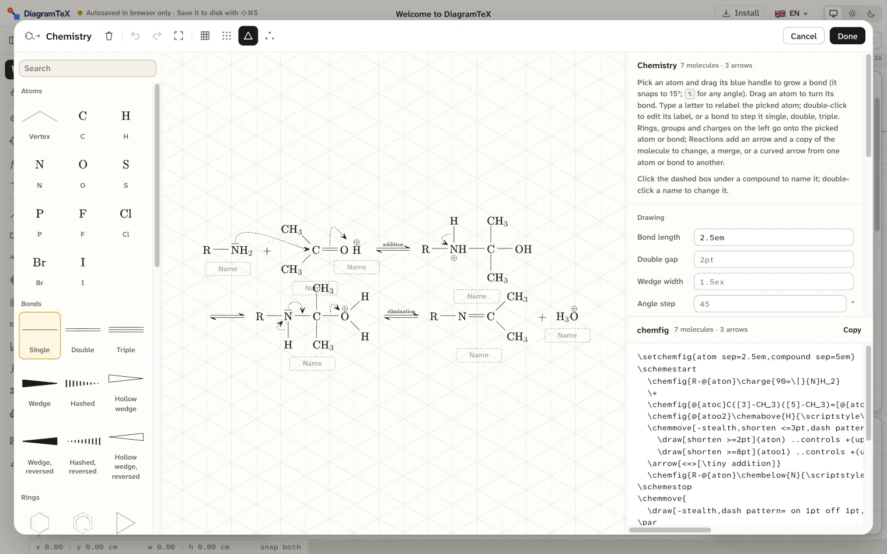

DiagramTeX/chemfig editor
Chemistry for LaTeX
chemfig editor: draw the molecule, copy the LaTeX
Grow a molecule bond by bond, drop in rings and groups, and write reactions with arrows between compounds. DiagramTeX writes the chemfig code as you draw, ready to paste into Overleaf or any LaTeX document.
- Free and open source
- Works offline
- No sign-up
- Nothing is uploaded

chemfig code on the right.How to draw a molecule
- Add a Chemistry block: open DiagramTeX, click the cube on the left rail, pick Chemistry and click the canvas. Double-click the block to open its editor.
- Grow it: drag an atom’s blue handle to add a bond. Type C H N O to relabel an atom, or double-click it for any label.
- Change a bond: double-click it to cycle single, double and triple.
- Add a ring or group: drag it from the palette onto an atom or bond.
- Write a reaction: add an arrow, then type or drop the next compound in its dashed box. Click the dashed box under a compound to name it.
- Copy the code: press Done, then CtrlE (⌘E on a Mac) and Copy.
Example: Imine formation
This is the code DiagramTeX writes for the molecule in the picture above. The first line names the packages to load.
chemfig snippetOpen it in DiagramTeX and edit it
% Requires: \usepackage{tikz} \usepackage{chemfig}
\begin{tikzpicture}[x=1cm, y=1cm]
\node[anchor=north west, inner sep=0pt, text width=11.81cm, align=left] at (0.75,-1.5) {%
\setchemfig{atom sep=2.5em,compound sep=5em}
\schemestart
\chemfig{R-@{aton}\charge{90=\|}{N}H_2}
\+
\chemfig{@{atoc}C([3]-CH_3)([5]-CH_3)=[@{atoo1}]O}
\chemfig{@{atoo2}\chemabove{H}{\scriptstyle\oplus}}
\chemmove[-stealth,shorten <=3pt,dash pattern= on 1pt off 1pt,thin]{
\draw[shorten >=2pt](aton) ..controls +(up:10mm) and +(left:5mm)..(atoc);
\draw[shorten >=8pt](atoo1) ..controls +(up:10mm) and +(north west:10mm)..(atoo2);}
\arrow{<=>[\tiny addition]}
\chemfig{R-@{aton}\chembelow{N}{\scriptstyle\oplus}H([2]-[@{sb}]H)-C(-[2]CH_3)(-[6]CH_3)-OH}
\schemestop
\chemmove{
\draw[-stealth,dash pattern= on 1pt off 1pt,shorten <=3pt,shorten >=2pt](sb)..controls +(180:0.35cm) and +(150:0.55cm)..(aton);}
\par
\schemestart
\arrow{<=>}
\chemfig{R-@{aton}\charge{90=\|}{N}([6]-[@{sbh}]H)-[@{sb}]C(-[2]CH_3)(-[6]CH_3)-[@{sbo}]@{atoo}
\chemabove{O}{\scriptstyle\oplus}(-[1]H)(-[7]H)}
\chemmove[-stealth,shorten <=3pt,shorten >=2pt,dash pattern= on 1pt off 1pt,thin]{
\draw(aton) ..controls +(up:5mm) and +(up:5mm)..(sb);
\draw(sbh) ..controls +(left:5mm) and +(south west:5mm)..(aton);
\draw(sbo) ..controls +(up:5mm) and +(north west:5mm)..(atoo);}
\arrow{<=>[\tiny elimination]}\chemfig{R-N=C(-[1]CH_3)(-[7]CH_3)}
\+
\chemfig{H_3\chemabove{O}{\scriptstyle\oplus}}
\schemestop%
};
\end{tikzpicture}What the editor does
- Structural formulas: atoms, single, double and triple bonds, rings and ready-made groups.
- Reaction schemes: arrows between compounds, with names under them.
- Charges and curved arrows: for mechanisms, as
chemfigdraws them. - Code both ways: the code beside the drawing follows every change, and the drawing follows the code when you edit it.
- Bring molecules in: paste
\chemfig{…}onto the canvas and it becomes a block you can edit. - Pictures too: export the molecule as SVG, PNG at any DPI, or PDF, for slides and worksheets.
Questions
- Is it free?
- Yes. DiagramTeX is free and open source (GNU AGPLv3), with no account, no paid tier and no ads. The code it writes for you is yours to use however you like.
- Does it work with Overleaf?
- Yes. Copy the code into your project and add
\usepackage{chemfig}. The LaTeX dialog can also download a.zipto upload to Overleaf. - Is my molecule uploaded anywhere?
- No. DiagramTeX runs in your browser and keeps your files there. Once it has loaded, it also works offline.